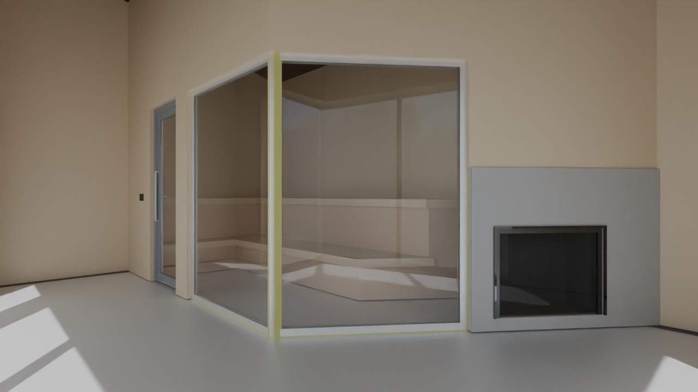
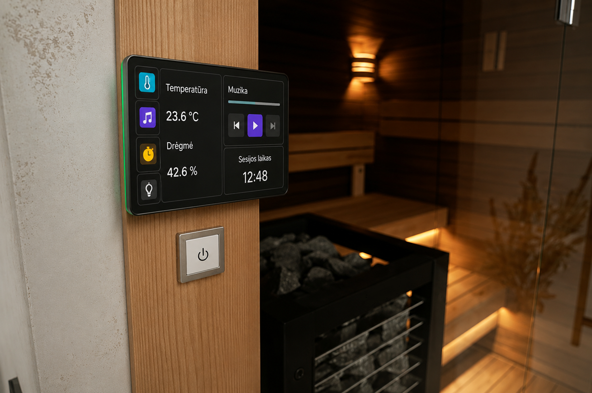

Šiltesnė, išmanesnė ir patogesnė pirties patirtis su Saura.
Saura yra KTU vystomas aparatinės įrangos rinkinys, skirtas modernizuoti pirtį be sudėtingos rekonstrukcijos. Sistema suteikia 7 colių jutiklinį ekraną, temperatūros ir drėgmės stebėjimą, Bluetooth muziką, LED spalvų valdymą ir sesijos laikmatį viename sprendime.
Galimas savarankiškas montavimas arba papildoma įrengimo paslauga.
Tinka tiek naujai įrengiamoms, tiek jau veikiančioms pirtims.
Stebi temperatūrą, drėgmę ir padeda aiškiai sekti pirties sesijos eigą.
Dabartinė versija neskirta pirties kaitinimo valdymui.

7 colių jutiklinis ekranas montuojamas išorėje, šalia pirties durų.
Kodėl tai aktualu
Rinkinio formatas leidžia sprendimą pritaikyti praktiškai.
Saura kuriama kaip realiam naudojimui tinkantis produktas. Kadangi tai modulinis aparatinės įrangos rinkinys, jį galima integruoti į naują pirtį arba sumontuoti jau įrengtoje pirtyje, neperdarant visos sistemos iš pagrindų.
Vartotojas gali pasirinkti savarankišką montavimą arba už papildomą kainą užsisakyti įrengimo paslaugą.
Savarankiškas montavimas
Tinka techniškai pasiruošusiems naudotojams ir modernizuojamoms pirtims.
Įrengimo paslauga
Papildomai siūloma paslauga tiems, kurie nori sklandesnio ir greitesnio paleidimo.
Ką suteikia
Aiškesnį valdymą ir malonesnę pirties sesiją.
Produktas orientuotas į stebėjimą, atmosferą ir patogų sesijos valdymą ekrane.
Aplinkos stebėjimas
Sistema realiu laiku stebi temperatūrą ir drėgmę, todėl naudotojas visos sesijos metu mato svarbiausią informaciją.
LED ir muzikos valdymas
Galima valdyti LED spalvas ir leisti muziką per pirties Bluetooth garsiakalbius iš jutiklinio ekrano arba iš telefono.
Ateities plėtra
Būsimuose modeliuose planuojama sąveika su ESPHome per MQTT, kad sistema galėtų tapti dar labiau integruota.

KTU projektas
Kurdami Saurą žiūrime į realų produktą, o ne tik į prototipą.
Saura vystoma Kauno technologijos universitete kaip produkto kryptis, turinti realų pritaikymo potencialą rinkoje. Mums svarbu ne tik techninis įgyvendinimas, bet ir aiški vertė būsimam naudotojui.
Todėl šiame puslapyje akcentuojame, kam sprendimas skirtas, kaip jis pritaikomas esamose pirtyse ir kodėl rinkinio formatas yra patrauklus.
Temperatūros ir drėgmės stebėjimas, Bluetooth muzika, LED valdymas ir sesijos laikmatis.
Dabartinė versija kol kas nenumato kaitinimo valdymo funkcijos.
Video pristatymas
Pažiūrėkite, kaip Saura atrodo praktiškai.
Kontaktai
Domina produktas, projekto idėja ar tolimesnė jo kryptis?
Jei norite sužinoti daugiau apie Saurą, jos pritaikymo galimybes ar susisiekti su projekto komanda, parašykite mums.